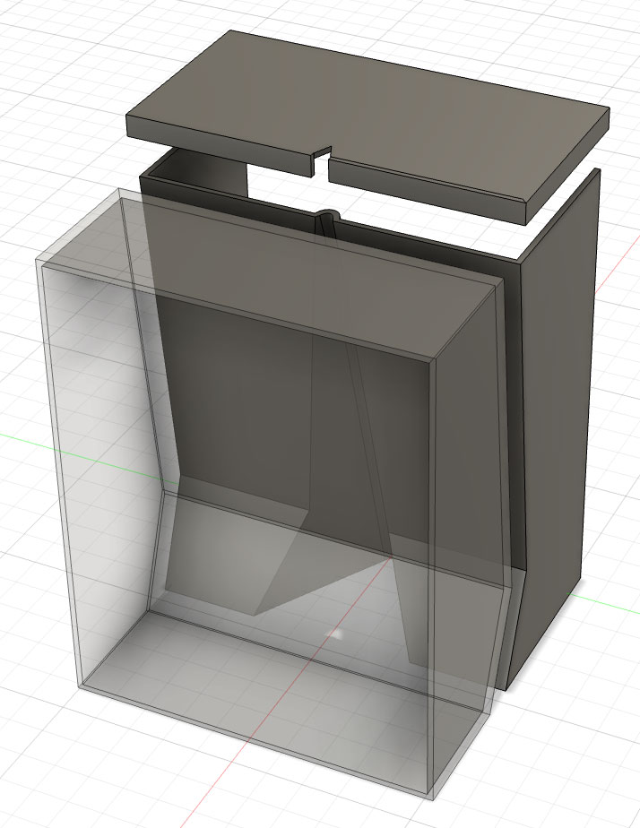
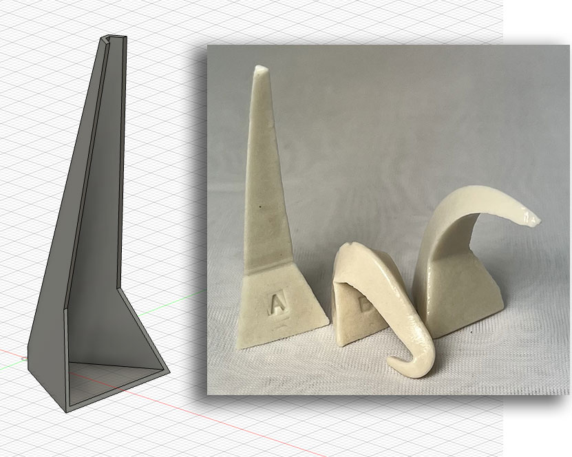
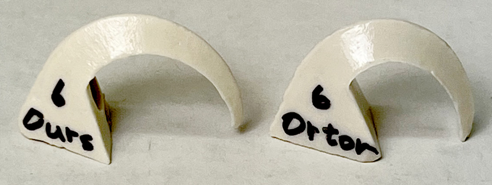
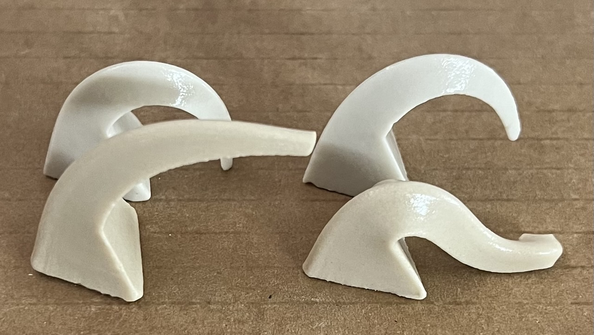
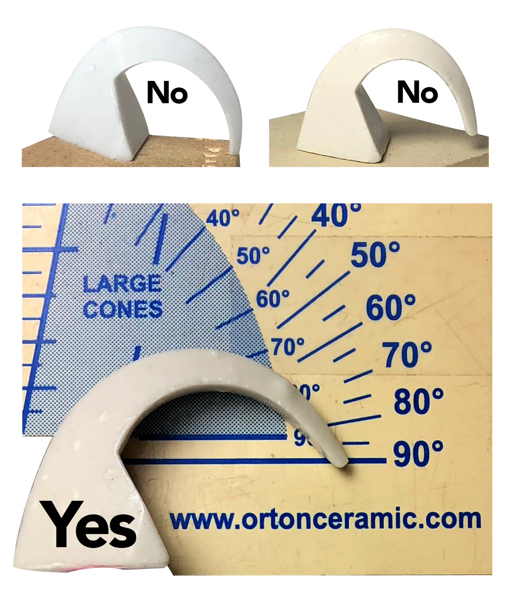
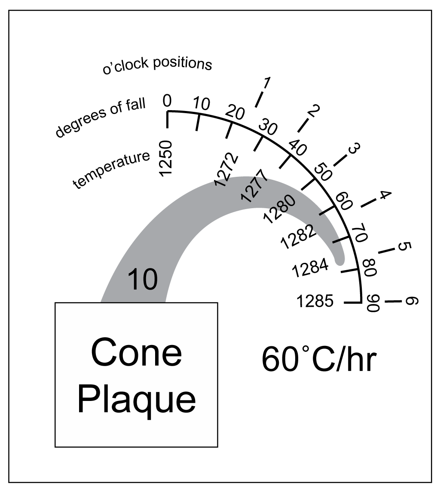

A cereal bowl jigger mold made using 3D printing
Beer Bottle Master Mold via 3D Printing
Better porosity for Brown Sugar Savers
Build a kiln monitoring device
Celebration Project
Coffee Mug Slip Casting Mold via 3D Printing
Comparing the Melt Fluidity of 16 Frits
Cookie Cutting clay with 3D printed cutters
Evaluating a clay's suitability for use in pottery
Make a mold for 4-gallon stackable calciners
Make your own sieve shaker to process ceramic slurries
Making a high quality ceramic tile
Making a Plaster Table
Making Bricks
Making our own kiln posts using a hand extruder
Medalta Ball Pitcher Slip Casting Mold via 3D Printing
Medalta Jug Master Mold Development
Mold Natches
Mother Nature's Porcelain - Plainsman 3B
Mug Handle Casting
Nursery plant pot mold via 3D printing
Pie-Crust Mug-Making Method
Plainsman 3D, Mother Nature's Porcelain/Stoneware
Project to Document a Shimpo Jiggering Attachment
Roll, Cut, Pull, Attach Handle-making Method
Slurry Mixing and Dewatering Your Own Clay Body
Testing a New Load of EP Kaolin
Using milk as a glaze
Make Your Own Pyrometric Cones
Pyrometric cones were first developed in 1896, they are still indispensable in ceramics, there is nothing like seeing a correctly bent cone to verify that the kiln fired to the right temperature. Cones have always been readily available but the supply chain issues that arose during COVID helped me realize I can make these. The cost of self supporting cones, the only ones we will use, is also more motivation.
Of course, Orton uses dust pressing to form their cones. And they incorporate plenty of binder to make them strong in the dry state (I would use CMC gum). But I don’t need the high volume that they require. It was easy to design the 3D geometry and print simple press molds. Casting is another option, I found out to be even more promising. Using a 3D printer it is easy to make PLA molds to produce the needed plaster molds.
A challenge will be the bending range. An Orton cone 6 bends through a ~30F degree range. This may be a product of tradition or it may be technically desirable. Or it may be better for a cone to complete its bending in fewer degrees than Orton has done since we don’t use guide and guard cones anymore.
Related Information
3D drawing to print shell mold to make plaster pyrometric cone molds

This picture has its own page with more detail, click here to see it.
Print these three, pour plaster into them (after soaping) and you have a cone slip casting mold. Part 2 has a separate upper to enable printing it upright without a printed support structure (producing a much higher quality surface). Hold that top cap on with a rubber band to cast. The separate cap also makes it easier to extract the plaster mold after set. If you would like this 3D file in Fusion 360 format, it is available in the Files manager in your Insight-live.com account.
Make your own pyrometric cones? Why not!

This picture has its own page with more detail, click here to see it.
Self-supporting cones are a must in each firing but they are expensive. Fortunately the shape of a self-supporting cone is easy to draw in 3D (I did it here in Fusion 360). It is a 25mm equilateral triangle base lofted to a 3mm one 65mm straight up on the front side. And then a cut-out across the front. By using 3D printed molds and plastic clay I can press these by the dozen. What about a recipe? Cones melt short of being glazes but beyond being porcelains. I chose L3685Z3 engobe as a starting point, it has a linear vitrification curve spanning a wide range. Approaching this on the material level, not as a chemistry project, I did three iterations of adding Ferro frit 3110 to the engobe. Shown here are the second, "A" and third, "B" (on the right is an Orton cone 6). B has too much frit, A does not have enough. You likely guessed what I did next: Mixed A and B. The result was almost perfect, bent just a little too much. If you would like this 3D file in Fusion 360 format, it is available in the Files manager in your Insight-live.com account.
Success: My homemade cone 6 is bending the same as the Orton

This picture has its own page with more detail, click here to see it.
This is recipe L4532D. You can 3D print your own cone molds or shell molds. Pressing into the 3D-printed PLA forms is potentially faster and easier if it can be made to work. The issue is that the pointed ends are quite delicate and either crack in the mold or break during handling. The uneven thicknesses requires special techniques to prevent cracking or warping during drying. The casting process is working better, the cones are more durable and drying is not an issue. Mold release has been a problem, but I find that using ball clay instead of kaolin produces a better casting and releasing slurry (for example, the L4532F recipe).
Our cone casting recipe is getting closer to working

This picture has its own page with more detail, click here to see it.
The rear cones are Orton 5 and 6. The front ones are the L4532F recipe, it is bending too much at six and not quite enough at cone 5. The L4532F recipe employs ball clay instead of kaolin, which is making for better casting properties and better dry strength. It has also greatly reduced the cost, removing the need for Veegum. The difference in bending for this one-cone range is also looking similar to what an Orton cone would do.
At what point is a self-supporting cone bent to the correct degree?

This picture has its own page with more detail, click here to see it.
Orton says “90 angular degrees is considered the endpoint of cone bending”. First, let's assume the normal: Examination of cones on kiln-opening to verify controller operation. Consider the cone on the left: The tip is touching. But it is also beginning to buckle, which means it was touching for a while before the firing ended. Who knows how long! The second one is not touching but has still fallen a little too far. Why do we say that? The third one, positioned on the Orton guide, has reached the recommended 90 degrees. This demonstrates a good reason why self-supporting cones are much better than standard ones: They are not touching when considered done. And standard cones, when set in a 3/4" plaque, have a less consistent bending behaviour.
The bending of an Orton standard cone 10

This picture has its own page with more detail, click here to see it.
People refer to the extent of cone-fall as numbers-on-the-clock or degrees. This cone is at 5 o'clock or 80 degrees. Notice that start-to-finish spans 35 degrees C (not all cones have this same 35 degree fall). As you can read on the temperature scale, 25+ degrees happen before it reaches 2 o'clock! From 5 to 6 o'clock is only 1 degree! This is a standard cone that requires a plaque, notice that the down-touching position is when it hits the top of the plaque. It follows from this that one can convert cone-bend to equivalent temperature. That being said, remember that cones measure heat-work, so the conversion is only valid for a 60C/hr rate-of-rise.
Links
| URLs |
https://insight-live.com/insight/recipes.php?OpenFile=FqwbqG2s3e
Download pyrometric cone casting shell mold CAD drawing 3D print this, pour in plaster to create a working mold for slip casting cones. This link enters your Insight-live account so you need to be logged in. |
 PayPal | No tracking, No ads, No paywall, No transient content! Just organized, concise information constantly updated and improved. Was this helpful? Consider supporting me. |
| By Tony Hansen Follow me on        |  |
Got a Question?
Buy me a coffee and we can talk 

https://digitalfire.com, All Rights Reserved
Privacy Policy